knitr::opts_chunk$set(
fig.width = 8,
fig.height = 4.8,
dpi = 300,
warning = FALSE,
message = FALSE
)
library(data.table)
library(ggplot2)
library(knitr)
library(here)
source(here("R", "report_helpers.R"))
results_object_file <- here("data", "drc_report_results_objects.rda")
report_results <- load_drc_report_results(results_object_file)
drc_results_objects <- report_results$drc_results_objectsValidation-Gain Path Presentation Experiments
1 Purpose
This notebook inspects the exact data frames used by plot_validation_percent_gain_path() and experiments with alternative summaries that make the distinction between the averaged tuning path and the selected full grid setting clearer.
The original figure uses:
drc_results_objects$tree_min_relative_gain_pathdrc_results_objects$forest_min_relative_gain_path
Inside plot_validation_percent_gain_path(), these are copied to plot_dt, and rows where selected == TRUE are redrawn as the larger white circle.
show_table <- function(x, caption = NULL, digits = 3L) {
out <- copy(as.data.table(x))
numeric_cols <- names(out)[vapply(out, is.numeric, logical(1))]
if (length(numeric_cols)) {
out[, (numeric_cols) := lapply(.SD, round, digits = digits),
.SDcols = numeric_cols]
}
if (requireNamespace("DT", quietly = TRUE)) {
return(DT::datatable(
out,
caption = caption,
rownames = FALSE,
filter = "top",
options = list(pageLength = 20, scrollX = TRUE)
))
}
knitr::kable(out, caption = caption)
}
path_object <- function(model) {
object_name <- paste0(model, "_min_relative_gain_path")
out <- copy(as.data.table(drc_results_objects[[object_name]] %||% data.table()))
if (nrow(out)) {
out[, model := model]
data.table::setcolorder(out, c("model", setdiff(names(out), "model")))
}
out[]
}
raw_grid_object <- function(model) {
object_name <- paste0(model, "_complexity_metrics")
out <- copy(as.data.table(drc_results_objects[[object_name]] %||% data.table()))
if (!nrow(out)) {
return(out)
}
out[
,
`:=`(
model = model,
validation_percent_gain = 100 * mean_validation_relative_gain,
validation_percent_se = if (
"std_err_validation_relative_gain" %in% names(out)
) {
100 * std_err_validation_relative_gain
} else {
NA_real_
}
)
]
data.table::setcolorder(out, c("model", setdiff(names(out), "model")))
out[]
}
selected_settings_object <- function(model) {
object_name <- paste0(model, "_best_by_type")
out <- copy(as.data.table(drc_results_objects[[object_name]] %||% data.table()))
if (nrow(out)) {
out[, model := model]
data.table::setcolorder(out, c("model", setdiff(names(out), "model")))
}
out[]
}
tree_path_plot_dt <- path_object("tree")
forest_path_plot_dt <- path_object("forest")
path_plot_dt <- rbindlist(
list(tree_path_plot_dt, forest_path_plot_dt),
use.names = TRUE,
fill = TRUE
)
tree_raw_grid_dt <- raw_grid_object("tree")
forest_raw_grid_dt <- raw_grid_object("forest")
raw_grid_dt <- rbindlist(
list(tree_raw_grid_dt, forest_raw_grid_dt),
use.names = TRUE,
fill = TRUE
)
tree_selected_settings <- selected_settings_object("tree")
forest_selected_settings <- selected_settings_object("forest")
selected_settings <- rbindlist(
list(tree_selected_settings, forest_selected_settings),
use.names = TRUE,
fill = TRUE
)
selected_keys <- selected_settings[, .(model, type, grid_id)]
selected_actual_dt <- raw_grid_dt[
selected_keys,
on = c("model", "type", "grid_id"),
nomatch = 0
]
selected_display_cols <- intersect(
c(
"model", "type", "grid_id", "min_relative_gain", "validation_percent_gain",
"validation_percent_se", "mean_validation_gain", "mean_root_objective",
"mean_terminal_nodes", "ntree", "mtry", "minsplit", "minbucket",
"minprob", "maxdepth", "min_gain"
),
names(selected_actual_dt)
)2 Exact Plot Data
These are the data frames passed into plot_validation_percent_gain_path(). They are already summarized by type and min_relative_gain.
show_table(
forest_path_plot_dt,
"Exact data frame used for the forest validation-gain path figure"
)| model | type | min_relative_gain | n_settings | mean_validation_gain | mean_root_objective | validation_percent_gain | validation_percent_se | validation_percent_from_mean_root | min_validation_percent_gain | max_validation_percent_gain | mean_terminal_nodes | terminal_nodes_se | selected |
|---|---|---|---|---|---|---|---|---|---|---|---|---|---|
| forest | CI | 0.25 | 3 | -0.022 | 0.119 | -58.026 | 14.804 | -18.876 | -58.929 | -56.875 | 3.980 | 0.003 | FALSE |
| forest | CI | 0.30 | 3 | -0.015 | 0.119 | -43.361 | 12.078 | -12.628 | -45.019 | -42.004 | 3.228 | 0.005 | TRUE |
| forest | CI | 0.35 | 3 | -0.009 | 0.119 | -26.929 | 7.844 | -7.430 | -28.207 | -24.984 | 2.476 | 0.017 | FALSE |
| forest | CI | 0.40 | 3 | -0.005 | 0.119 | -16.654 | 5.446 | -4.016 | -17.498 | -16.133 | 1.965 | 0.017 | FALSE |
| forest | CI | 0.45 | 3 | -0.003 | 0.119 | -9.421 | 3.735 | -2.696 | -10.391 | -8.862 | 1.522 | 0.022 | FALSE |
| forest | CI | 0.50 | 3 | -0.002 | 0.119 | -5.343 | 2.565 | -1.598 | -5.781 | -4.681 | 1.289 | 0.006 | FALSE |
| forest | CI | 0.55 | 3 | -0.001 | 0.119 | -2.491 | 1.648 | -1.035 | -2.756 | -2.082 | 1.144 | 0.003 | FALSE |
| forest | CI | 0.60 | 3 | -0.001 | 0.119 | -2.252 | 1.358 | -1.062 | -2.332 | -2.122 | 1.086 | 0.009 | FALSE |
| forest | CIc | 0.25 | 3 | -0.007 | 0.048 | -55.491 | 16.556 | -14.331 | -57.131 | -54.151 | 4.123 | 0.025 | FALSE |
| forest | CIc | 0.30 | 3 | -0.006 | 0.048 | -47.367 | 13.953 | -12.676 | -47.971 | -46.883 | 3.501 | 0.016 | FALSE |
| forest | CIc | 0.35 | 3 | -0.004 | 0.048 | -34.422 | 11.253 | -7.410 | -35.698 | -32.602 | 2.939 | 0.037 | TRUE |
| forest | CIc | 0.40 | 3 | -0.002 | 0.048 | -22.268 | 7.561 | -4.506 | -22.735 | -21.772 | 2.243 | 0.010 | FALSE |
| forest | CIc | 0.45 | 3 | 0.000 | 0.048 | -11.634 | 4.911 | -0.874 | -12.952 | -10.226 | 1.783 | 0.012 | FALSE |
| forest | CIc | 0.50 | 3 | 0.000 | 0.048 | -5.502 | 2.990 | -0.766 | -6.416 | -5.042 | 1.431 | 0.002 | FALSE |
| forest | CIc | 0.55 | 3 | 0.000 | 0.048 | -3.219 | 1.962 | -0.229 | -3.689 | -2.581 | 1.219 | 0.009 | FALSE |
| forest | CIc | 0.60 | 3 | 0.000 | 0.048 | -0.310 | 0.866 | 0.665 | -1.192 | 0.864 | 1.103 | 0.003 | FALSE |
| forest | CIg | 0.25 | 3 | -0.002 | 0.012 | -58.191 | 16.453 | -16.714 | -59.778 | -56.231 | 4.198 | 0.016 | FALSE |
| forest | CIg | 0.30 | 3 | -0.002 | 0.012 | -50.259 | 15.144 | -13.325 | -51.686 | -48.229 | 3.506 | 0.027 | FALSE |
| forest | CIg | 0.35 | 3 | -0.001 | 0.012 | -31.570 | 10.369 | -6.288 | -33.779 | -28.057 | 2.869 | 0.019 | TRUE |
| forest | CIg | 0.40 | 3 | -0.001 | 0.012 | -25.104 | 8.442 | -5.526 | -27.174 | -22.167 | 2.253 | 0.006 | FALSE |
| forest | CIg | 0.45 | 3 | 0.000 | 0.012 | -9.175 | 4.000 | -0.525 | -10.972 | -5.899 | 1.717 | 0.021 | FALSE |
| forest | CIg | 0.50 | 3 | 0.000 | 0.012 | -7.250 | 3.205 | -1.752 | -7.767 | -6.473 | 1.412 | 0.003 | FALSE |
| forest | CIg | 0.55 | 3 | 0.000 | 0.012 | -3.002 | 1.924 | -0.644 | -3.631 | -2.315 | 1.207 | 0.009 | FALSE |
| forest | CIg | 0.60 | 3 | 0.000 | 0.012 | -1.469 | 1.200 | -0.432 | -2.333 | -0.981 | 1.119 | 0.003 | FALSE |
| forest | L | 0.25 | 3 | 0.264 | 0.313 | 62.444 | 8.735 | 84.286 | 60.687 | 63.781 | 4.801 | 0.013 | FALSE |
| forest | L | 0.30 | 3 | 0.275 | 0.313 | 66.313 | 7.956 | 87.938 | 65.192 | 67.923 | 4.313 | 0.024 | FALSE |
| forest | L | 0.35 | 3 | 0.278 | 0.313 | 68.950 | 7.165 | 88.811 | 65.892 | 71.902 | 3.980 | 0.008 | FALSE |
| forest | L | 0.40 | 3 | 0.281 | 0.313 | 70.675 | 7.670 | 89.729 | 68.650 | 72.218 | 3.635 | 0.005 | FALSE |
| forest | L | 0.45 | 3 | 0.282 | 0.313 | 69.332 | 7.705 | 90.013 | 68.443 | 70.841 | 3.410 | 0.007 | FALSE |
| forest | L | 0.50 | 3 | 0.278 | 0.313 | 71.383 | 6.865 | 89.018 | 70.770 | 72.095 | 3.153 | 0.009 | FALSE |
| forest | L | 0.55 | 3 | 0.281 | 0.313 | 72.094 | 6.874 | 89.899 | 71.147 | 73.006 | 2.935 | 0.019 | TRUE |
| forest | L | 0.60 | 3 | 0.280 | 0.313 | 72.048 | 6.715 | 89.388 | 71.462 | 72.681 | 2.764 | 0.005 | FALSE |
show_table(
tree_path_plot_dt,
"Exact data frame used for the tree validation-gain path figure"
)| model | type | min_relative_gain | n_settings | mean_validation_gain | mean_root_objective | validation_percent_gain | validation_percent_se | validation_percent_from_mean_root | min_validation_percent_gain | max_validation_percent_gain | mean_terminal_nodes | terminal_nodes_se | selected |
|---|---|---|---|---|---|---|---|---|---|---|---|---|---|
| tree | CI | 0.15 | 1 | -0.039 | 0.119 | -97.010 | 40.809 | -32.519 | -97.010 | -97.010 | 8.5 | NA | FALSE |
| tree | CI | 0.20 | 1 | -0.036 | 0.119 | -100.272 | 47.626 | -30.610 | -100.272 | -100.272 | 8.2 | NA | FALSE |
| tree | CI | 0.25 | 1 | -0.024 | 0.119 | -75.476 | 42.721 | -19.742 | -75.476 | -75.476 | 7.5 | NA | TRUE |
| tree | CI | 0.30 | 1 | -0.014 | 0.119 | -68.242 | 44.752 | -12.099 | -68.242 | -68.242 | 6.8 | NA | FALSE |
| tree | CIc | 0.15 | 1 | -0.015 | 0.048 | -85.159 | 38.664 | -30.636 | -85.159 | -85.159 | 8.9 | NA | FALSE |
| tree | CIc | 0.20 | 1 | -0.012 | 0.048 | -79.287 | 39.483 | -25.866 | -79.287 | -79.287 | 8.1 | NA | FALSE |
| tree | CIc | 0.25 | 1 | -0.012 | 0.048 | -75.247 | 38.810 | -24.010 | -75.247 | -75.247 | 7.8 | NA | FALSE |
| tree | CIc | 0.30 | 1 | -0.011 | 0.048 | -73.107 | 39.003 | -22.243 | -73.107 | -73.107 | 7.3 | NA | TRUE |
| tree | CIg | 0.15 | 1 | -0.003 | 0.012 | -80.988 | 40.012 | -26.465 | -80.988 | -80.988 | 8.7 | NA | FALSE |
| tree | CIg | 0.20 | 1 | -0.003 | 0.012 | -79.287 | 39.483 | -25.866 | -79.287 | -79.287 | 8.1 | NA | FALSE |
| tree | CIg | 0.25 | 1 | -0.003 | 0.012 | -75.247 | 38.810 | -24.010 | -75.247 | -75.247 | 7.8 | NA | FALSE |
| tree | CIg | 0.30 | 1 | -0.003 | 0.012 | -73.107 | 39.003 | -22.243 | -73.107 | -73.107 | 7.3 | NA | TRUE |
| tree | L | 0.15 | 1 | 0.283 | 0.313 | 67.188 | 13.642 | 90.320 | 67.188 | 67.188 | 10.0 | NA | FALSE |
| tree | L | 0.20 | 1 | 0.283 | 0.313 | 68.125 | 13.535 | 90.572 | 68.125 | 68.125 | 9.3 | NA | FALSE |
| tree | L | 0.25 | 1 | 0.284 | 0.313 | 68.308 | 13.512 | 90.652 | 68.308 | 68.308 | 8.5 | NA | FALSE |
| tree | L | 0.30 | 1 | 0.286 | 0.313 | 70.525 | 13.425 | 91.471 | 70.525 | 70.525 | 6.8 | NA | TRUE |
The important columns are:
validation_percent_gain: mean validation gain at this criterion and minimum relative split-gain value.validation_percent_se: summarized standard error used for the vertical bars.min_validation_percent_gainandmax_validation_percent_gain: spread of raw grid settings collapsed into the samemin_relative_gainbucket.mean_terminal_nodes: mean tree complexity at this bucket.selected: whether the selected full tuning grid row falls in this bucket.
3 Selected Full-Grid Settings
The selected model is chosen from the full tuning grid, not from the collapsed path above. This table shows the selected rows recovered from the raw complexity metrics.
show_table(
selected_actual_dt[, ..selected_display_cols],
"Selected full-grid rows with their actual validation scores"
)| model | type | grid_id | min_relative_gain | validation_percent_gain | validation_percent_se | mean_validation_gain | mean_root_objective | mean_terminal_nodes | ntree | mtry | minsplit | minbucket | minprob | maxdepth | min_gain |
|---|---|---|---|---|---|---|---|---|---|---|---|---|---|---|---|
| tree | CI | 3 | 0.25 | -75.476 | 42.721 | -0.024 | 0.119 | 7.500 | NA | NA | 500 | 100 | 0.01 | 10 | 0 |
| tree | CIg | 8 | 0.30 | -73.107 | 39.003 | -0.003 | 0.012 | 7.300 | NA | NA | 500 | 100 | 0.01 | 10 | 0 |
| tree | CIc | 12 | 0.30 | -73.107 | 39.003 | -0.011 | 0.048 | 7.300 | NA | NA | 500 | 100 | 0.01 | 10 | 0 |
| tree | L | 16 | 0.30 | 70.525 | 13.425 | 0.286 | 0.313 | 6.800 | NA | NA | 500 | 100 | 0.01 | 10 | 0 |
| forest | CI | 2 | 0.30 | -42.004 | 20.762 | -0.014 | 0.119 | 3.232 | 50 | 15 | 500 | 100 | 0.01 | 15 | 0 |
| forest | CIc | 19 | 0.35 | -32.602 | 18.237 | -0.003 | 0.048 | 2.867 | 500 | 15 | 500 | 100 | 0.01 | 15 | 0 |
| forest | CIg | 19 | 0.35 | -33.779 | 19.008 | -0.001 | 0.012 | 2.839 | 500 | 15 | 500 | 100 | 0.01 | 15 | 0 |
| forest | L | 7 | 0.55 | 73.006 | 11.980 | 0.284 | 0.313 | 2.900 | 50 | 15 | 500 | 100 | 0.01 | 15 | 0 |
4 Option 1: Reproduce the Current Plot
This is the current helper output. The large circle marks the summarized min_relative_gain bucket containing the selected full-grid setting.
plot_validation_percent_gain_path(
tree_path_plot_dt,
title = "Tree Validation Gain (% Root): Current Summary"
)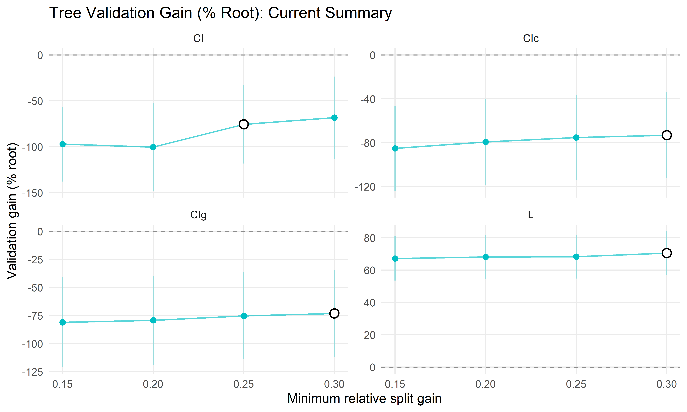
plot_validation_percent_gain_path(
forest_path_plot_dt,
title = "Forest Validation Gain (% Root): Current Summary"
)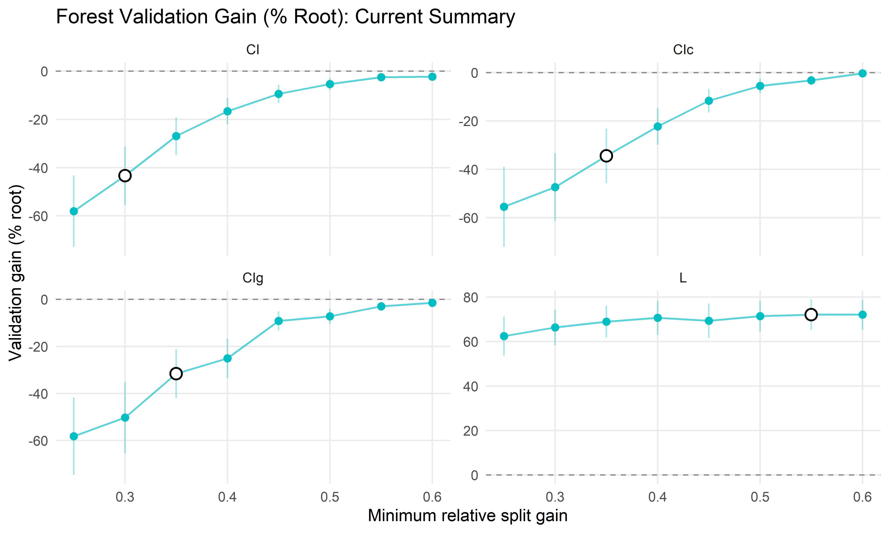
5 Option 2: Raw Grid Points Plus Mean Path
This version shows all raw tuning-grid settings as faint points, overlays the mean path, and marks the selected full-grid row at its actual validation score. This makes it clearer when the selected full-grid setting differs from the highest averaged bucket.
plot_raw_plus_mean_path <- function(model_name, title) {
raw_dt <- raw_grid_dt[model == model_name]
mean_dt <- path_plot_dt[model == model_name]
selected_dt <- selected_actual_dt[model == model_name]
ggplot() +
geom_hline(
yintercept = 0,
linetype = 2,
color = "gray55",
linewidth = 0.4
) +
geom_point(
data = raw_dt,
aes(x = min_relative_gain, y = validation_percent_gain),
color = "gray45",
alpha = 0.28,
size = 1.6,
na.rm = TRUE
) +
geom_errorbar(
data = mean_dt,
aes(
x = min_relative_gain,
ymin = validation_percent_gain - validation_percent_se,
ymax = validation_percent_gain + validation_percent_se
),
width = 0,
alpha = 0.35,
color = "#00A6B2",
na.rm = TRUE
) +
geom_line(
data = mean_dt,
aes(x = min_relative_gain, y = validation_percent_gain, group = type),
linewidth = 0.7,
color = "#00A6B2",
na.rm = TRUE
) +
geom_point(
data = mean_dt,
aes(x = min_relative_gain, y = validation_percent_gain),
size = 2,
color = "#00A6B2",
na.rm = TRUE
) +
geom_point(
data = selected_dt,
aes(x = min_relative_gain, y = validation_percent_gain),
shape = 21,
size = 3.2,
stroke = 0.9,
fill = "white",
color = "black",
na.rm = TRUE
) +
facet_wrap(ggplot2::vars(type), scales = "free_y") +
labs(
x = "Minimum relative split gain",
y = "Validation gain (% root)",
title = title,
subtitle = "Gray points are raw grid settings; turquoise line is the grouped mean; large circle is the selected full-grid row."
) +
theme_minimal(base_size = 11) +
theme(panel.grid.minor = element_blank())
}plot_raw_plus_mean_path(
"tree",
"Tree Validation Gain: Raw Grid Settings and Mean Path"
)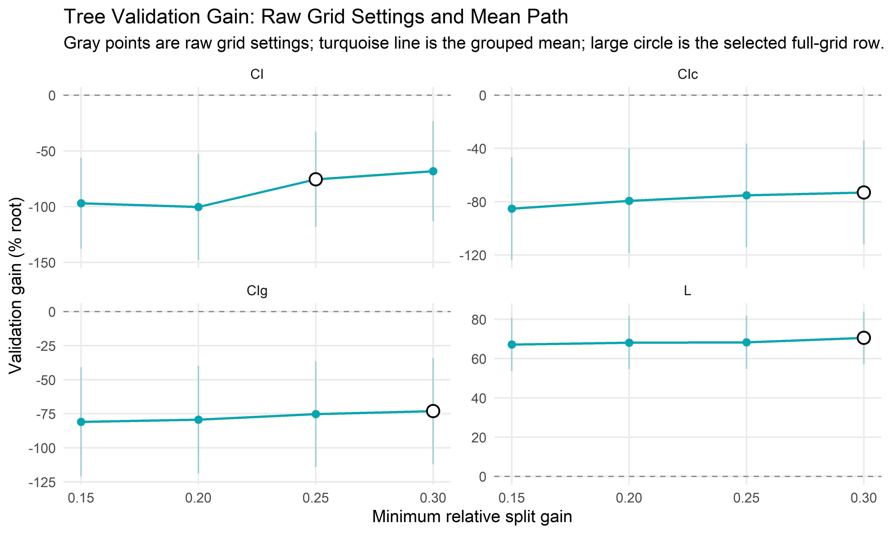
plot_raw_plus_mean_path(
"forest",
"Forest Validation Gain: Raw Grid Settings and Mean Path"
)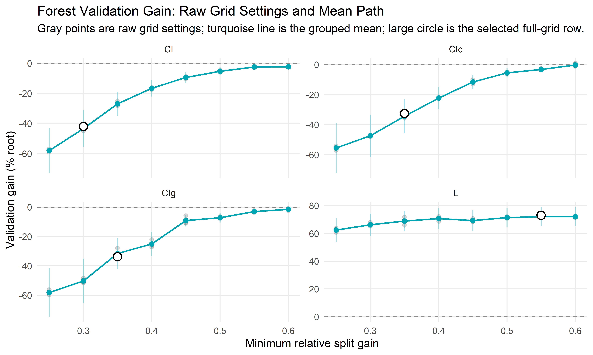
6 Option 3: Mean Path With Raw-Grid Range
This version keeps the simple mean path but uses the min/max columns already in the plot data frame to show how much variation was collapsed into each min_relative_gain bucket.
plot_mean_range_path <- function(model_name, title) {
mean_dt <- path_plot_dt[model == model_name]
selected_bucket_dt <- mean_dt[selected == TRUE]
selected_dt <- selected_actual_dt[model == model_name]
ggplot(
mean_dt,
aes(x = min_relative_gain, y = validation_percent_gain, group = type)
) +
geom_hline(
yintercept = 0,
linetype = 2,
color = "gray55",
linewidth = 0.4
) +
geom_ribbon(
aes(
ymin = min_validation_percent_gain,
ymax = max_validation_percent_gain
),
fill = "#7A7A7A",
alpha = 0.16,
color = NA,
na.rm = TRUE
) +
geom_line(linewidth = 0.7, color = "#00A6B2", na.rm = TRUE) +
geom_point(size = 2, color = "#00A6B2", na.rm = TRUE) +
geom_point(
data = selected_bucket_dt,
aes(x = min_relative_gain, y = validation_percent_gain),
inherit.aes = FALSE,
shape = 21,
size = 3.4,
stroke = 0.9,
fill = "white",
color = "black",
na.rm = TRUE
) +
geom_point(
data = selected_dt,
aes(x = min_relative_gain, y = validation_percent_gain),
inherit.aes = FALSE,
shape = 24,
size = 3,
stroke = 0.8,
fill = "#D55E00",
color = "black",
na.rm = TRUE
) +
facet_wrap(ggplot2::vars(type), scales = "free_y") +
labs(
x = "Minimum relative split gain",
y = "Validation gain (% root)",
title = title,
subtitle = "Band is min-max across raw grid settings; circle is selected bucket mean; triangle is selected row."
) +
theme_minimal(base_size = 11) +
theme(panel.grid.minor = element_blank())
}plot_mean_range_path(
"tree",
"Tree Validation Gain: Mean Path With Raw-Grid Range"
)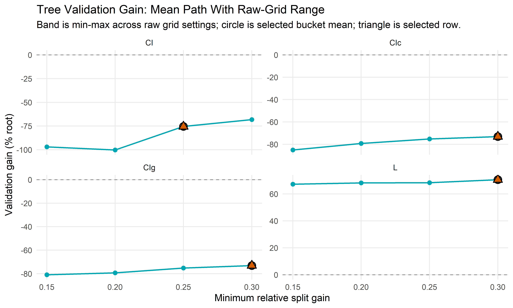
plot_mean_range_path(
"forest",
"Forest Validation Gain: Mean Path With Raw-Grid Range"
)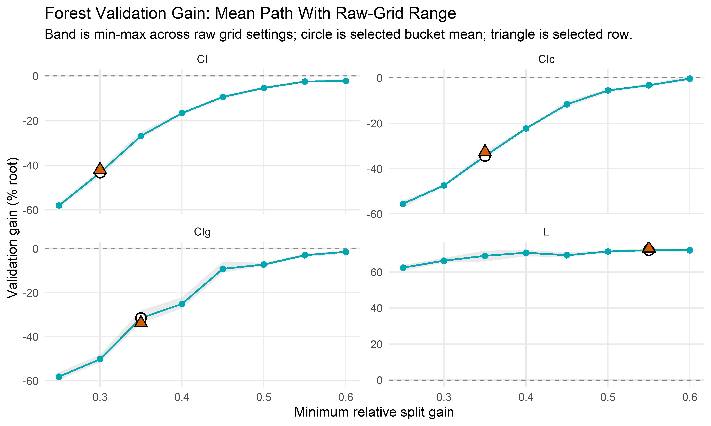
7 Option 4: Validation Gain and Complexity Tradeoff
This version removes min_relative_gain from the x-axis and directly shows the tradeoff between validation performance and mean terminal-node count. The label on the highlighted point reports the selected split-gain threshold.
plot_gain_complexity_tradeoff <- function(model_name, title) {
mean_dt <- path_plot_dt[model == model_name]
selected_bucket_dt <- mean_dt[selected == TRUE]
ggplot(
mean_dt,
aes(
x = mean_terminal_nodes,
y = validation_percent_gain,
group = type
)
) +
geom_hline(
yintercept = 0,
linetype = 2,
color = "gray55",
linewidth = 0.4
) +
geom_path(
aes(color = min_relative_gain),
linewidth = 0.7,
alpha = 0.75,
na.rm = TRUE
) +
geom_point(
aes(color = min_relative_gain),
size = 2.2,
na.rm = TRUE
) +
geom_point(
data = selected_bucket_dt,
aes(x = mean_terminal_nodes, y = validation_percent_gain),
inherit.aes = FALSE,
shape = 21,
size = 3.4,
stroke = 0.9,
fill = "white",
color = "black",
na.rm = TRUE
) +
geom_text(
data = selected_bucket_dt,
aes(
x = mean_terminal_nodes,
y = validation_percent_gain,
label = sprintf("%.2f", min_relative_gain)
),
inherit.aes = FALSE,
nudge_y = 4,
size = 3,
na.rm = TRUE
) +
facet_wrap(ggplot2::vars(type), scales = "free") +
scale_color_viridis_c(option = "C", end = 0.92) +
labs(
x = "Mean terminal nodes",
y = "Validation gain (% root)",
color = "Min relative\nsplit gain",
title = title
) +
theme_minimal(base_size = 11) +
theme(panel.grid.minor = element_blank())
}plot_gain_complexity_tradeoff(
"tree",
"Tree Validation Gain and Complexity Tradeoff"
)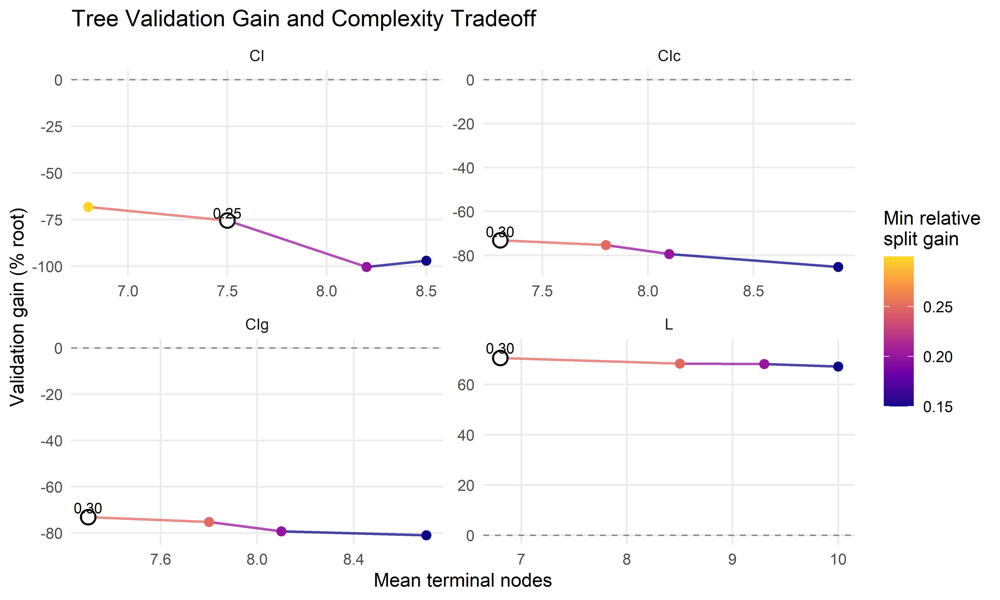
plot_gain_complexity_tradeoff(
"forest",
"Forest Validation Gain and Complexity Tradeoff"
)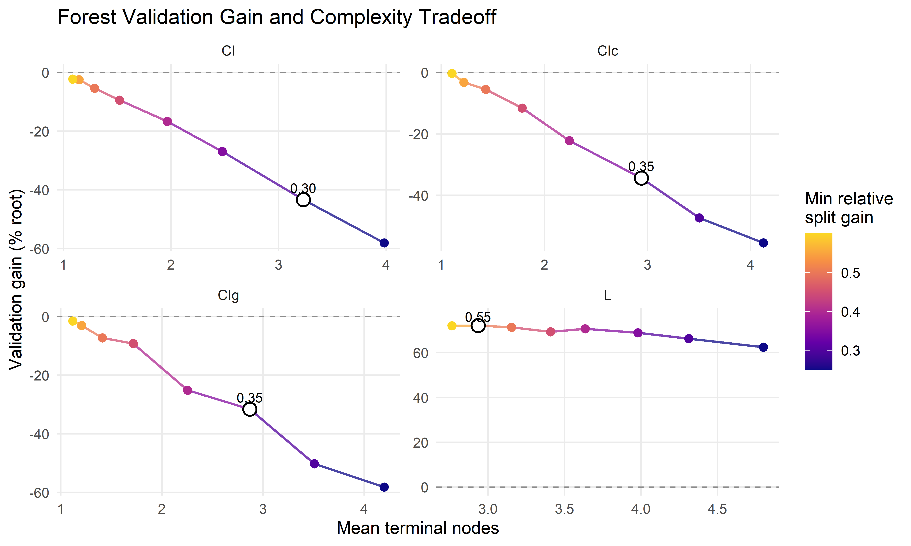
8 Option 5: Fixed Forest Settings
This section filters the raw forest tuning grid before summarising. It is useful when we want to ask a narrower question such as:
If the CI forest uses 50 trees,
mtry = 15, andmin_relative_gain = 0.3, what are the mean train/validation gains and complexity for that fixed setting?
This avoids mixing that setting with other forest settings that happen to share the same min_relative_gain.
filter_equal <- function(dt, column, value) {
if (!column %in% names(dt) || is.null(value) || length(value) == 0L) {
return(dt)
}
if (is.numeric(dt[[column]]) && is.numeric(value)) {
tolerance <- sqrt(.Machine$double.eps)
return(dt[is.finite(get(column)) & abs(get(column) - value[1L]) < tolerance])
}
dt[get(column) == value[1L]]
}
filter_fixed_forest <- function(type_value, fixed = list()) {
out <- copy(forest_raw_grid_dt[type == type_value])
if (!nrow(out)) {
return(out)
}
for (column in names(fixed)) {
out <- filter_equal(out, column, fixed[[column]])
}
out[]
}
selected_full_forest_rows <- function(type_values = NULL) {
keys <- copy(forest_selected_settings)
if (!is.null(type_values)) {
keys <- keys[type %in% type_values]
}
if (!nrow(keys)) {
return(data.table())
}
selected_cols <- intersect(
c(
"type", "ntree", "mtry", "minsplit", "minbucket", "minprob",
"maxdepth", "min_gain", "min_relative_gain"
),
names(keys)
)
rows <- lapply(seq_len(nrow(keys)), function(i) {
key <- keys[i]
out <- copy(forest_raw_grid_dt[type == key$type])
for (column in setdiff(selected_cols, "type")) {
out <- filter_equal(out, column, key[[column]])
}
out[]
})
rbindlist(rows, use.names = TRUE, fill = TRUE)
}
summarise_fixed_forest <- function(dt, label, group_cols = NULL) {
if (!nrow(dt)) {
return(data.table())
}
if (is.null(group_cols)) {
group_cols <- c("model", "type")
}
group_cols <- intersect(group_cols, names(dt))
dt[
,
.(
label = label,
n_grid_rows = .N,
n_grid_ids = uniqueN(grid_id),
train_gain_percent = mean(100 * mean_train_relative_gain, na.rm = TRUE),
validation_gain_percent = mean(validation_percent_gain, na.rm = TRUE),
validation_se_percent = {
se <- validation_percent_se[is.finite(validation_percent_se)]
if (length(se)) sqrt(sum(se^2)) / length(se) else NA_real_
},
terminal_nodes = mean(mean_terminal_nodes, na.rm = TRUE),
mean_root_objective = mean(mean_root_objective, na.rm = TRUE)
),
by = group_cols
][]
}
fixed_summary_long <- function(summary_dt) {
if (!nrow(summary_dt)) {
return(data.table())
}
measure_cols <- intersect(
c(
"train_gain_percent", "validation_gain_percent",
"validation_se_percent", "terminal_nodes"
),
names(summary_dt)
)
melt(
summary_dt,
id.vars = setdiff(names(summary_dt), measure_cols),
measure.vars = measure_cols,
variable.name = "metric",
value.name = "value"
)[
,
metric_label := fifelse(
metric == "train_gain_percent",
"Train gain (% root)",
fifelse(
metric == "validation_gain_percent",
"Validation gain (% root)",
fifelse(
metric == "validation_se_percent",
"Validation SE (% root)",
"Mean terminal nodes"
)
)
)
][]
}
plot_fixed_forest_summary <- function(summary_dt, title) {
long_dt <- fixed_summary_long(summary_dt)
if (!nrow(long_dt)) {
return(
ggplot() +
annotate("text", x = 0, y = 0, label = "No matching forest rows") +
labs(title = title, x = NULL, y = NULL) +
theme_void(base_size = 11)
)
}
ggplot(
long_dt,
aes(x = type, y = value, fill = metric_label)
) +
geom_hline(
data = long_dt[grepl("gain", metric_label, ignore.case = TRUE)],
inherit.aes = FALSE,
yintercept = 0,
linetype = 2,
color = "gray55",
linewidth = 0.35
) +
geom_col(width = 0.62, color = "gray30", linewidth = 0.2) +
geom_text(
aes(label = sprintf("%.2f", value)),
vjust = ifelse(long_dt$value >= 0, -0.35, 1.25),
size = 3,
na.rm = TRUE
) +
facet_wrap(ggplot2::vars(metric_label), scales = "free_y") +
scale_fill_manual(
values = c(
"Train gain (% root)" = "#3268A8",
"Validation gain (% root)" = "#00A6B2",
"Validation SE (% root)" = "#8A8A8A",
"Mean terminal nodes" = "#D55E00"
),
guide = "none"
) +
labs(
x = NULL,
y = NULL,
title = title
) +
theme_minimal(base_size = 11) +
theme(panel.grid.minor = element_blank())
}8.1 CI Forest: 50 Trees, mtry = 15, min_relative_gain = 0.3
This is the specific fixed setting described above. If several grid rows match these three fixed values because other controls differ, the table and plot show the mean over those matching rows.
ci_forest_fixed_rows <- filter_fixed_forest(
type_value = "CI",
fixed = list(
ntree = 50L,
mtry = 15L,
min_relative_gain = 0.3
)
)
ci_forest_fixed_summary <- summarise_fixed_forest(
ci_forest_fixed_rows,
label = "CI forest: ntree 50, mtry 15, min relative gain 0.3",
group_cols = c("model", "type", "ntree", "mtry", "min_relative_gain")
)
fixed_row_display_cols <- intersect(
c(
"model", "type", "grid_id", "ntree", "mtry", "minsplit", "minbucket",
"minprob", "maxdepth", "min_gain", "min_relative_gain",
"validation_percent_gain", "validation_percent_se",
"mean_train_relative_gain", "mean_validation_relative_gain",
"mean_terminal_nodes"
),
names(ci_forest_fixed_rows)
)
show_table(
ci_forest_fixed_rows[, ..fixed_row_display_cols],
"Forest grid rows included in the fixed CI setting"
)| model | type | grid_id | ntree | mtry | minsplit | minbucket | minprob | maxdepth | min_gain | min_relative_gain | validation_percent_gain | validation_percent_se | mean_train_relative_gain | mean_validation_relative_gain | mean_terminal_nodes |
|---|---|---|---|---|---|---|---|---|---|---|---|---|---|---|---|
| forest | CI | 2 | 50 | 15 | 500 | 100 | 0.01 | 15 | 0 | 0.3 | -42.004 | 20.762 | 0.411 | -0.42 | 3.232 |
show_table(
ci_forest_fixed_summary,
"Mean metrics for the fixed CI forest setting"
)| model | type | ntree | mtry | min_relative_gain | label | n_grid_rows | n_grid_ids | train_gain_percent | validation_gain_percent | validation_se_percent | terminal_nodes | mean_root_objective |
|---|---|---|---|---|---|---|---|---|---|---|---|---|
| forest | CI | 50 | 15 | 0.3 | CI forest: ntree 50, mtry 15, min relative gain 0.3 | 1 | 1 | 41.123 | -42.004 | 20.762 | 3.232 | 0.119 |
plot_fixed_forest_summary(
ci_forest_fixed_summary,
"Fixed CI Forest Setting: Mean Metrics"
)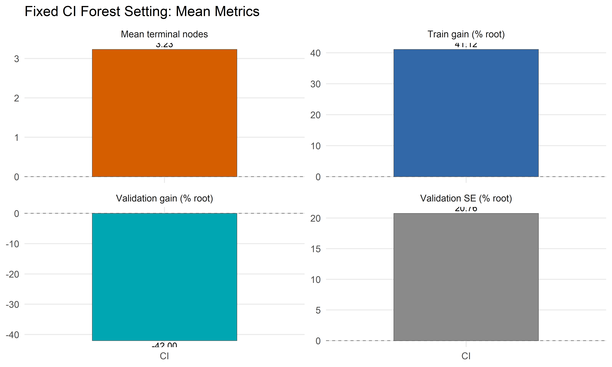
8.2 Selected Full Forest Settings by Criterion
This version fixes the complete selected forest setting for each criterion, using all split-control columns available in forest_best_by_type. It answers:
What does each selected forest look like at its exact selected full-grid configuration?
selected_full_forest_dt <- selected_full_forest_rows()
selected_full_forest_summary <- summarise_fixed_forest(
selected_full_forest_dt,
label = "Selected full forest setting",
group_cols = c(
"model", "type", "ntree", "mtry", "minsplit", "minbucket",
"minprob", "maxdepth", "min_gain", "min_relative_gain"
)
)
show_table(
selected_full_forest_summary,
"Mean metrics for the selected full forest settings"
)| model | type | ntree | mtry | minsplit | minbucket | minprob | maxdepth | min_gain | min_relative_gain | label | n_grid_rows | n_grid_ids | train_gain_percent | validation_gain_percent | validation_se_percent | terminal_nodes | mean_root_objective |
|---|---|---|---|---|---|---|---|---|---|---|---|---|---|---|---|---|---|
| forest | CI | 50 | 15 | 500 | 100 | 0.01 | 15 | 0 | 0.30 | Selected full forest setting | 1 | 1 | 41.123 | -42.004 | 20.762 | 3.232 | 0.119 |
| forest | CIc | 500 | 15 | 500 | 100 | 0.01 | 15 | 0 | 0.35 | Selected full forest setting | 1 | 1 | 38.357 | -32.602 | 18.237 | 2.867 | 0.048 |
| forest | CIg | 500 | 15 | 500 | 100 | 0.01 | 15 | 0 | 0.35 | Selected full forest setting | 1 | 1 | 38.067 | -33.779 | 19.008 | 2.839 | 0.012 |
| forest | L | 50 | 15 | 500 | 100 | 0.01 | 15 | 0 | 0.55 | Selected full forest setting | 1 | 1 | 93.661 | 73.006 | 11.980 | 2.900 | 0.313 |
plot_fixed_forest_summary(
selected_full_forest_summary,
"Selected Full Forest Settings: Mean Metrics"
)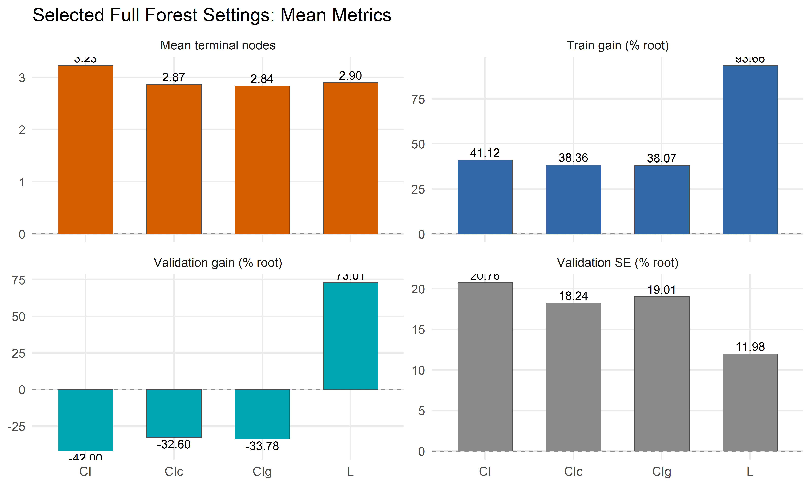
9 Option 6: Fixed Forest Controls, Vary min_relative_gain
This is the least confusing way to show the selected minimum relative split-gain value. For each criterion, we hold the selected forest controls fixed, except for min_relative_gain, and then plot the validation path over min_relative_gain.
For example, if the selected CI forest used ntree = 50, mtry = 15, minsplit = 200, minbucket = 100, and maxdepth = 10, this plot compares only CI forests with those controls fixed while min_relative_gain varies. The highlighted point is then selected from the same conditional path being plotted.
selected_forest_fixed_controls <- function(type_value, extra_fixed = list()) {
selected_row <- forest_selected_settings[type == type_value]
if (!nrow(selected_row)) {
return(list())
}
selected_row <- copy(selected_row[1L])
control_cols <- intersect(
c(
"ntree", "mtry", "minsplit", "minbucket", "minprob",
"maxdepth", "min_gain"
),
names(selected_row)
)
fixed <- as.list(selected_row[, ..control_cols])
fixed <- fixed[!vapply(fixed, function(x) length(x) == 0L || is.na(x[1L]), logical(1))]
modifyList(fixed, extra_fixed)
}
fixed_control_min_gain_path <- function(type_value, fixed_controls, label = NULL) {
out <- copy(forest_raw_grid_dt[type == type_value])
if (!nrow(out)) {
return(data.table())
}
for (column in names(fixed_controls)) {
out <- filter_equal(out, column, fixed_controls[[column]])
}
if (!nrow(out)) {
return(data.table())
}
selected_row <- forest_selected_settings[type == type_value]
selected_min_gain <- if (nrow(selected_row)) {
selected_row$min_relative_gain[1L]
} else {
NA_real_
}
out[
,
.(
label = label %||% paste(type_value, "selected controls"),
n_grid_rows = .N,
n_grid_ids = uniqueN(grid_id),
train_gain_percent = mean(100 * mean_train_relative_gain, na.rm = TRUE),
validation_gain_percent = mean(validation_percent_gain, na.rm = TRUE),
validation_se_percent = {
se <- validation_percent_se[is.finite(validation_percent_se)]
if (length(se)) sqrt(sum(se^2)) / length(se) else NA_real_
},
min_validation_gain_percent = min(validation_percent_gain, na.rm = TRUE),
max_validation_gain_percent = max(validation_percent_gain, na.rm = TRUE),
terminal_nodes = mean(mean_terminal_nodes, na.rm = TRUE),
selected = isTRUE(
is.finite(selected_min_gain) &&
abs(min_relative_gain[1L] - selected_min_gain) < sqrt(.Machine$double.eps)
)
),
by = .(type, min_relative_gain)
][order(type, min_relative_gain)]
}
selected_controls_min_gain_paths <- function(type_values = NULL) {
if (is.null(type_values)) {
type_values <- unique(forest_selected_settings$type)
}
if (!length(type_values)) {
return(data.table())
}
paths <- lapply(type_values, function(type_value) {
fixed_controls <- selected_forest_fixed_controls(type_value)
fixed_control_min_gain_path(
type_value = type_value,
fixed_controls = fixed_controls,
label = paste(type_value, "selected controls")
)
})
rbindlist(paths, use.names = TRUE, fill = TRUE)
}
plot_fixed_control_min_gain_path <- function(path_dt, title) {
if (!nrow(path_dt)) {
return(
ggplot() +
annotate("text", x = 0, y = 0, label = "No matching forest path") +
labs(title = title, x = NULL, y = NULL) +
theme_void(base_size = 11)
)
}
selected_dt <- path_dt[selected == TRUE]
ggplot(
path_dt,
aes(x = min_relative_gain, y = validation_gain_percent, group = type)
) +
geom_hline(
yintercept = 0,
linetype = 2,
color = "gray55",
linewidth = 0.4
) +
geom_ribbon(
aes(
ymin = min_validation_gain_percent,
ymax = max_validation_gain_percent
),
fill = "#7A7A7A",
alpha = 0.14,
color = NA,
na.rm = TRUE
) +
geom_errorbar(
aes(
ymin = validation_gain_percent - validation_se_percent,
ymax = validation_gain_percent + validation_se_percent
),
width = 0,
alpha = 0.35,
color = "#00A6B2",
na.rm = TRUE
) +
geom_line(linewidth = 0.7, color = "#00A6B2", na.rm = TRUE) +
geom_point(size = 2, color = "#00A6B2", na.rm = TRUE) +
geom_point(
data = selected_dt,
aes(x = min_relative_gain, y = validation_gain_percent),
inherit.aes = FALSE,
shape = 21,
size = 3.4,
stroke = 0.9,
fill = "white",
color = "black",
na.rm = TRUE
) +
facet_wrap(ggplot2::vars(type), scales = "free_y") +
labs(
x = "Minimum relative split gain",
y = "Validation gain (% root)",
title = title,
subtitle = "Forest controls are fixed at the selected setting; only min_relative_gain varies."
) +
theme_minimal(base_size = 11) +
theme(panel.grid.minor = element_blank())
}9.1 CI Forest Path Conditional on the Selected Setting
This view takes the selected CI forest setting, removes only min_relative_gain from the fixed controls, and then plots the path over min_relative_gain.
ci_selected_fixed_controls <- selected_forest_fixed_controls("CI")
ci_fixed_controls_path <- fixed_control_min_gain_path(
type_value = "CI",
fixed_controls = ci_selected_fixed_controls,
label = "CI forest: selected controls except min_relative_gain"
)
show_table(
as.data.table(ci_selected_fixed_controls),
"CI forest controls held fixed"
)| ntree | mtry | minsplit | minbucket | minprob | maxdepth | min_gain |
|---|---|---|---|---|---|---|
| 50 | 15 | 500 | 100 | 0.01 | 15 | 0 |
show_table(
ci_fixed_controls_path,
"CI forest path conditional on selected controls except min_relative_gain"
)| type | min_relative_gain | label | n_grid_rows | n_grid_ids | train_gain_percent | validation_gain_percent | validation_se_percent | min_validation_gain_percent | max_validation_gain_percent | terminal_nodes | selected |
|---|---|---|---|---|---|---|---|---|---|---|---|
| CI | 0.25 | CI forest: selected controls except min_relative_gain | 1 | 1 | 47.878 | -56.875 | 24.436 | -56.875 | -56.875 | 3.978 | FALSE |
| CI | 0.30 | CI forest: selected controls except min_relative_gain | 1 | 1 | 41.123 | -42.004 | 20.762 | -42.004 | -42.004 | 3.232 | TRUE |
| CI | 0.35 | CI forest: selected controls except min_relative_gain | 1 | 1 | 29.589 | -24.984 | 13.070 | -24.984 | -24.984 | 2.442 | FALSE |
| CI | 0.40 | CI forest: selected controls except min_relative_gain | 1 | 1 | 21.941 | -17.498 | 9.620 | -17.498 | -17.498 | 1.996 | FALSE |
| CI | 0.45 | CI forest: selected controls except min_relative_gain | 1 | 1 | 12.551 | -9.010 | 5.640 | -9.010 | -9.010 | 1.478 | FALSE |
| CI | 0.50 | CI forest: selected controls except min_relative_gain | 1 | 1 | 8.458 | -4.681 | 4.329 | -4.681 | -4.681 | 1.300 | FALSE |
| CI | 0.55 | CI forest: selected controls except min_relative_gain | 1 | 1 | 3.951 | -2.082 | 2.493 | -2.082 | -2.082 | 1.138 | FALSE |
| CI | 0.60 | CI forest: selected controls except min_relative_gain | 1 | 1 | 3.428 | -2.303 | 2.511 | -2.303 | -2.303 | 1.104 | FALSE |
plot_fixed_control_min_gain_path(
ci_fixed_controls_path,
"CI Forest Validation Path Conditional on Selected Controls"
)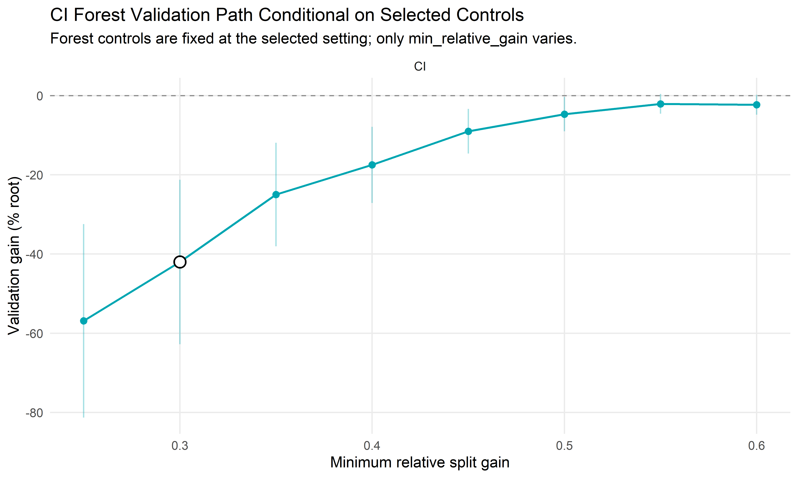
9.2 Selected-Control Forest Paths by Criterion
This version uses each criterion’s selected forest controls from forest_best_by_type, but deliberately excludes min_relative_gain from the fixed controls so it can form the x-axis path.
selected_controls_path_dt <- selected_controls_min_gain_paths()
show_table(
selected_controls_path_dt,
"Forest validation paths with selected controls fixed and min_relative_gain varying"
)| type | min_relative_gain | label | n_grid_rows | n_grid_ids | train_gain_percent | validation_gain_percent | validation_se_percent | min_validation_gain_percent | max_validation_gain_percent | terminal_nodes | selected |
|---|---|---|---|---|---|---|---|---|---|---|---|
| CI | 0.25 | CI selected controls | 1 | 1 | 47.878 | -56.875 | 24.436 | -56.875 | -56.875 | 3.978 | FALSE |
| CI | 0.30 | CI selected controls | 1 | 1 | 41.123 | -42.004 | 20.762 | -42.004 | -42.004 | 3.232 | TRUE |
| CI | 0.35 | CI selected controls | 1 | 1 | 29.589 | -24.984 | 13.070 | -24.984 | -24.984 | 2.442 | FALSE |
| CI | 0.40 | CI selected controls | 1 | 1 | 21.941 | -17.498 | 9.620 | -17.498 | -17.498 | 1.996 | FALSE |
| CI | 0.45 | CI selected controls | 1 | 1 | 12.551 | -9.010 | 5.640 | -9.010 | -9.010 | 1.478 | FALSE |
| CI | 0.50 | CI selected controls | 1 | 1 | 8.458 | -4.681 | 4.329 | -4.681 | -4.681 | 1.300 | FALSE |
| CI | 0.55 | CI selected controls | 1 | 1 | 3.951 | -2.082 | 2.493 | -2.082 | -2.082 | 1.138 | FALSE |
| CI | 0.60 | CI selected controls | 1 | 1 | 3.428 | -2.303 | 2.511 | -2.303 | -2.303 | 1.104 | FALSE |
| CIc | 0.25 | CIc selected controls | 1 | 1 | 51.952 | -57.131 | 28.745 | -57.131 | -57.131 | 4.164 | FALSE |
| CIc | 0.30 | CIc selected controls | 1 | 1 | 46.096 | -46.883 | 24.363 | -46.883 | -46.883 | 3.531 | FALSE |
| CIc | 0.35 | CIc selected controls | 1 | 1 | 38.357 | -32.602 | 18.237 | -32.602 | -32.602 | 2.867 | TRUE |
| CIc | 0.40 | CIc selected controls | 1 | 1 | 28.798 | -22.298 | 12.935 | -22.298 | -22.298 | 2.256 | FALSE |
| CIc | 0.45 | CIc selected controls | 1 | 1 | 20.232 | -12.952 | 8.780 | -12.952 | -12.952 | 1.776 | FALSE |
| CIc | 0.50 | CIc selected controls | 1 | 1 | 12.184 | -6.416 | 5.351 | -6.416 | -6.416 | 1.431 | FALSE |
| CIc | 0.55 | CIc selected controls | 1 | 1 | 7.043 | -3.689 | 3.393 | -3.689 | -3.689 | 1.228 | FALSE |
| CIc | 0.60 | CIc selected controls | 1 | 1 | 3.546 | -1.192 | 1.769 | -1.192 | -1.192 | 1.105 | FALSE |
| CIg | 0.25 | CIg selected controls | 1 | 1 | 51.639 | -59.778 | 29.767 | -59.778 | -59.778 | 4.191 | FALSE |
| CIg | 0.30 | CIg selected controls | 1 | 1 | 46.524 | -48.229 | 25.297 | -48.229 | -48.229 | 3.532 | FALSE |
| CIg | 0.35 | CIg selected controls | 1 | 1 | 38.067 | -33.779 | 19.008 | -33.779 | -33.779 | 2.839 | TRUE |
| CIg | 0.40 | CIg selected controls | 1 | 1 | 28.882 | -22.167 | 13.247 | -22.167 | -22.167 | 2.249 | FALSE |
| CIg | 0.45 | CIg selected controls | 1 | 1 | 19.142 | -10.972 | 7.840 | -10.972 | -10.972 | 1.751 | FALSE |
| CIg | 0.50 | CIg selected controls | 1 | 1 | 11.919 | -6.473 | 5.431 | -6.473 | -6.473 | 1.414 | FALSE |
| CIg | 0.55 | CIg selected controls | 1 | 1 | 6.911 | -3.631 | 3.512 | -3.631 | -3.631 | 1.221 | FALSE |
| CIg | 0.60 | CIg selected controls | 1 | 1 | 3.927 | -2.333 | 2.326 | -2.333 | -2.333 | 1.116 | FALSE |
| L | 0.25 | L selected controls | 1 | 1 | 94.949 | 63.781 | 14.532 | 63.781 | 63.781 | 4.774 | FALSE |
| L | 0.30 | L selected controls | 1 | 1 | 94.780 | 67.923 | 13.905 | 67.923 | 67.923 | 4.280 | FALSE |
| L | 0.35 | L selected controls | 1 | 1 | 94.994 | 71.902 | 11.914 | 71.902 | 71.902 | 3.994 | FALSE |
| L | 0.40 | L selected controls | 1 | 1 | 94.490 | 72.218 | 12.707 | 72.218 | 72.218 | 3.628 | FALSE |
| L | 0.45 | L selected controls | 1 | 1 | 94.416 | 68.443 | 14.338 | 68.443 | 68.443 | 3.400 | FALSE |
| L | 0.50 | L selected controls | 1 | 1 | 93.940 | 71.283 | 11.668 | 71.283 | 71.283 | 3.160 | FALSE |
| L | 0.55 | L selected controls | 1 | 1 | 93.661 | 73.006 | 11.980 | 73.006 | 73.006 | 2.900 | TRUE |
| L | 0.60 | L selected controls | 1 | 1 | 93.317 | 72.000 | 11.225 | 72.000 | 72.000 | 2.758 | FALSE |
plot_fixed_control_min_gain_path(
selected_controls_path_dt,
"Forest Validation Path With Selected Controls Fixed"
)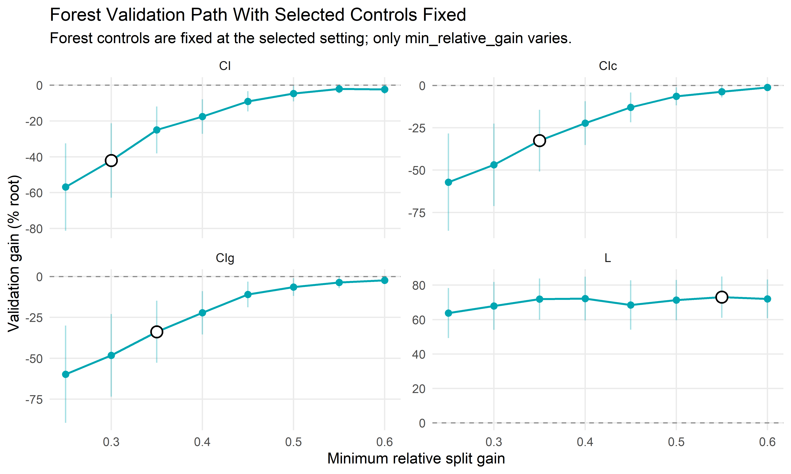
10 Compact Selection Summary
This table is a thesis-friendly companion to any of the plots above.
compact_selection <- selected_actual_dt[
,
.(
model,
type,
grid_id,
min_relative_gain,
validation_gain_percent = validation_percent_gain,
validation_se_percent = validation_percent_se,
mean_terminal_nodes,
ntree = if ("ntree" %in% names(selected_actual_dt)) ntree else NA_integer_,
mtry = if ("mtry" %in% names(selected_actual_dt)) mtry else NA_integer_,
minsplit = if ("minsplit" %in% names(selected_actual_dt)) minsplit else NA_integer_,
minbucket = if ("minbucket" %in% names(selected_actual_dt)) minbucket else NA_integer_
)
]
show_table(
compact_selection,
"Compact selected-setting summary"
)| model | type | grid_id | min_relative_gain | validation_gain_percent | validation_se_percent | mean_terminal_nodes | ntree | mtry | minsplit | minbucket |
|---|---|---|---|---|---|---|---|---|---|---|
| tree | CI | 3 | 0.25 | -75.476 | 42.721 | 7.500 | NA | NA | 500 | 100 |
| tree | CIg | 8 | 0.30 | -73.107 | 39.003 | 7.300 | NA | NA | 500 | 100 |
| tree | CIc | 12 | 0.30 | -73.107 | 39.003 | 7.300 | NA | NA | 500 | 100 |
| tree | L | 16 | 0.30 | 70.525 | 13.425 | 6.800 | NA | NA | 500 | 100 |
| forest | CI | 2 | 0.30 | -42.004 | 20.762 | 3.232 | 50 | 15 | 500 | 100 |
| forest | CIc | 19 | 0.35 | -32.602 | 18.237 | 2.867 | 500 | 15 | 500 | 100 |
| forest | CIg | 19 | 0.35 | -33.779 | 19.008 | 2.839 | 500 | 15 | 500 | 100 |
| forest | L | 7 | 0.55 | 73.006 | 11.980 | 2.900 | 50 | 15 | 500 | 100 |
11 Suggested Reading
For the thesis text, the clearest wording is:
Points show mean validation gain across tuning settings with the same minimum relative split-gain value. The highlighted marker indicates the selected full tuning configuration, which was selected from the complete tuning grid rather than from this one-dimensional summary alone.